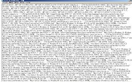
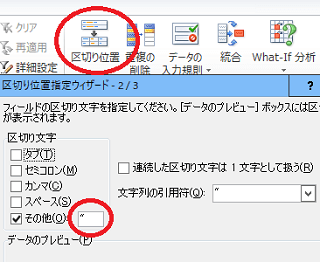
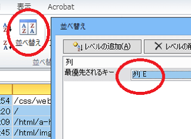
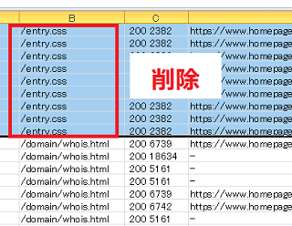
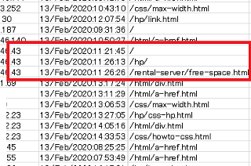
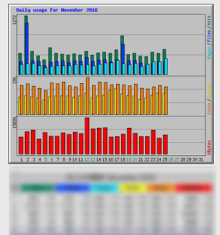
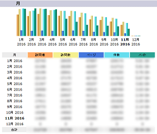
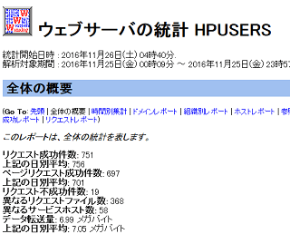
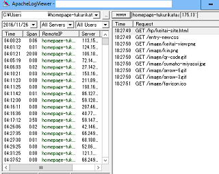

サーバー生ログのアクセス解析の方法
レンタルサーバー会社によって違いはありますが、管理画面でデータの保存設定をすることでアクセスログ(サーバーログ、生ログ)を閲覧することができます。不正アクセスや検索エンジンのクローリングを調べるには、このサーバー側のアクセスログを確認することでその詳細がわかります。
一般的には、サーバーの管理画面でアクセスログの保存設定を有効にしたのち、保存期間なども指定することでデータが蓄積されていきます。レンタルサーバーに「log」などのフォルダが作成されている場合、その場所にログが保存されていることが多いです。
たいていは「.log」というファイル名で保存されているはずですが、中身はただのテキストファイルのためメモ帳などで開いてみることができます。

もしログのファイルに拡張子が付いていない場合、「.log」などの拡張子を追加して閲覧するとよいでしょう。
アクセスログに書かれている内容とその意味
一見すると無数の情報が書かれているように見えますが、アクセスがある度に以下のような単純な情報が繰り返し書き加えられていきます。
111.11.11.11 - - [15/Jan/2001:00:05:12 +0900]
"GET https://www.homepage-tukurikata.com/hp/folder.html HTTP/1.1" 200 -
"https://www.homepage-tukurikata.com/"
"Mozilla/4.0 (compatible; MSIE 8.0; Windows NT 5.1)"
この場合、IPアドレス111.11.11.11の訪問者が、日本時間（+0900）の2001年1月15日の午前0時5分12秒に、https://www.homepage-tukurikata.com/hp/folder.html のファイルの取得をサーバーにリクエストして、200ＯＫで正常に送信されたという意味になります。
この「+0900」は、世界標準時間から９時間進めたものが日本の標準時となっているため、このような書き方になってます。また、ファイルが見つからなかった場合などは、200ではなく、404などが記載されることになります。
また、リクエストした元のページがhttps://www.homepage-tukurikata.com/ となっているため、トップページから移動してきたことになり、そのうしろにはブラウザ情報なども記載されています。
このIPアドレスの人が、次のページに行った場合にも同じようにアクセスログが追加されていくため、その時間差からそのページでの滞在時間を調べることができます。また、最後にアクセスしたページから、どのページで離脱したのかも判断することができます。
けれども、デザインなどで使用している画像素材などのファイル（.pngや.jpg、.gifなど）へのアクセスもその都度ログに記載されることになりますし、グーグルなどのクローラーによるアクセスも記載されるため、ログ自体は膨大なファイルになりがちです。
そのため、このアクセスログを調べる際は、膨大なデータのなかから画像やクローラーなどのアクセスを取り除いて調べる必要があります。
例えば、１ページ内で画像やCSSなどのファイルを10個使用していた場合、その１ページを閲覧する際にも各ファイルへのアクセスが10個発生してしまうため、実際のアクセスよりも10倍のヒット数が計測されてしまいます。
そのため、アクセスログで実際の訪問者のアクセス数を計測する場合、一般的には「.html」などのファイルのみをカウントして１ページビューとカウントすることになります。
アクセスログをExcelで閲覧する方法
アクセスログはメモ帳で開いても閲覧できますが、そのままではデータの並べ替えができないため、Excelやgoogleスプレッドシートなどでデータを処理してから閲覧することをおすすめします。データの行数が多い場合、Excelを利用した方が動作は軽いと思います。
例えば、ログをメモ帳で開いてコピペでExcelに貼り付けたのち、「データ - 区切り位置」の箇所から「"」や半角スペースなどを指定して、IPアドレスや時間ごとに列を分割していきます。

何回かに分けて分割する場合、増える列の分だけ右側の列が上書きされてしまうため、「ホーム - 挿入」の箇所から列を追加しながら分割していくことをおすすめします。
あとはアクセスされたURLの列を指定して並べ替えていきます。

この状態で画像やフォント、CSS、robots.txtなどの行をまとめて削除すれば、「.html」ファイルのみを確認することができます。「408」が大量に発生している場合、これはブラウザでサイトにアクセスしっぱなしの際などに発生しますが、こちらも削除してしまうとよいでしょう。

そのほか、検索エンジンなどのクローラーロボットのアクセスも削除しておくと見やすいです。
あとはIPアドレスで並べ替えれば、どのように遷移がされたのかを確認することができます。
例えば、画像などを削除してこのような履歴があったとします。

この訪問者さまの場合、当サイトのトップページを4分半閲覧してhpのページに移動し、移動先で10秒ほど閲覧してから、さらに無料ホームページスペースのページに移動したことになります。その次のページへのアクセスは記録されていないため、そこが離脱ページとなり、この最後のページの滞在時間については不明になります。
また、その他のリファラやIPアドレス、ユーザーエージェントの情報から、東京都にお住まいの訪問者さまが、Windows7のデスクトップPCにてIE11のブラウザを使い、グーグル検索経由で訪問されたと想定されます。
そのほか、IPアドレスを逆引きした際のホスト名で会社名が分かることもありますが、それ以上のことはアクセスログでは分かりません。
ただ、このようにExcelを利用して調べるのは不審なアクセスが発生した時ぐらいなもので、通常は何らかのアクセス解析ツールを利用するのが一般的です。
アクセスログの解析ツール一覧
アクセスログのデータ解析を自動的に行い、視覚的に見やすく表示してくれるアクセス解析ソフトがレンタルサーバーに付属していることが多いです。付属していない場合でも公式サイトから自分でソフトをダウンロードして使用することもできますが、インストールはかなり難しいです。
■レンタルサーバー付属のアクセスログ解析ツール
→ Webalizer（ウェブアライザー）、AWStats（エーダブリュー・スタッツ）など
＜Webalizerの例＞

このWebalizerについてはさくらインターネット系のサーバーで設置されているかと思います。かなり古いソフトのため、AWStatsの方が見やすいかもしれません。
＜AWStatsの例＞

エックスサーバー系ではこのツールが設置されているかと思います。
＜Analogの例＞

Analogもかなり古いツールですが、コアサーバー系で設置されています。もう開発はしていないようです。
上記３つのなかでは「AWStats」が一番使いやすいと思います。次に「Webalizer」、最後に「Analog」といった順かと思います。
そのほか、サーバー会社が独自で開発した解析ツールを利用できるケースもあります。
また、これらのツールをレンタルサーバーで利用できない場合でも、ログをパソコンにダウンロードして解析できるツールもあります。
■アクセスログをパソコンにダウンロードして解析
→ Apachelogviewerなど
＜Apachelogviewerの例＞

いずれのツールを使う場合でも、サーバーに保存されているアクセスログのデータ自体は同じですので、ほぼ同じ結果が表示されるかと思います。
けれども、これらの「サーバーのアクセスログの解析」とページ内にタグを埋め込んで計測する一般的な「JavaScriptのアクセス解析」では同じ結果にはなりません。
サーバーのログとJavaScriptのアクセス解析の違い
一般的にはサーバーのアクセスログよりも、グーグルアナリティクスなどJavaScriptタイプのアクセス解析の方が計測はより正確といえます。
サーバーのアクセスログの場合、検索エンジンロボットなどのクローラーによるアクセスについても計測してしまうのに対し、JavaScriptタイプのアクセス解析ではカウントしません。そのため、人間による実質的なアクセス解析については、グーグルアナリティクスなどのWebビーコン型のアクセス解析の方がより正確といえます。
一方で、グーグルアナリティクスなどのアクセス解析の場合、ユーザーがブラウザでJavaScriptの使用をオフに設定しているとカウントされません。また、タグを最下部に設定している場合などは読み込まれる前にページを離脱するとカウントされないケースもあります。
そのため、JavaScriptタイプのアクセス解析であっても、必ずしも正確な数字とはいえませんが、どちらかといえば、グーグルアナリティクスなどのアクセス解析の方が正確といえます。
ただし、不審なクローラーなどのアクセスについては、一般的なJavaScriptなどのアクセス解析では把握できないため、ロボットによる不審なアクセスが膨大にあったとしても、JavaScriptによるアクセス解析では気づかないままになってしまう可能性があります。
それぞれにメリット・デメリットがあるといえますが、通常はアナリティクスなどのタグをページ内に埋め込むJavaScriptタイプのアクセス解析を利用し、定期的にサーバー側のアクセスログもチェックしておくとよいでしょう。
次のページ → サーバーアクセスログの設定方法